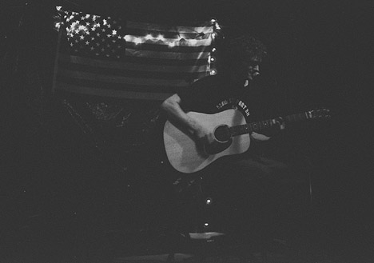
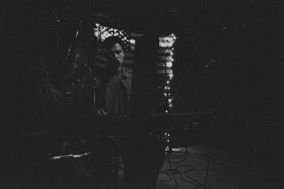
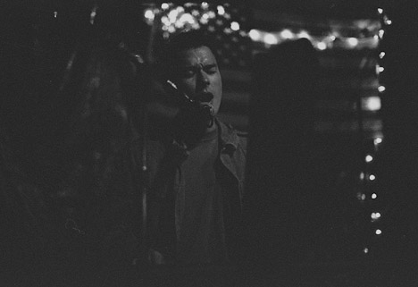
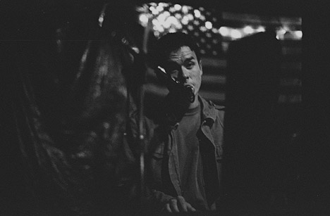
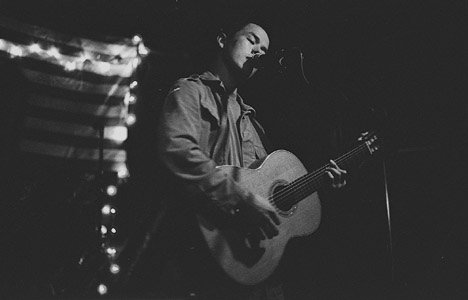
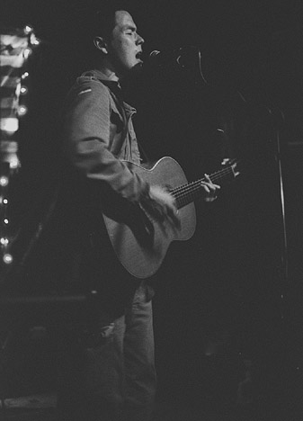
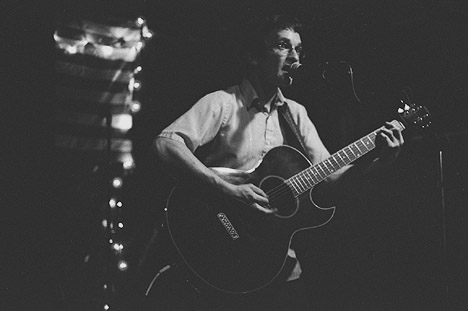
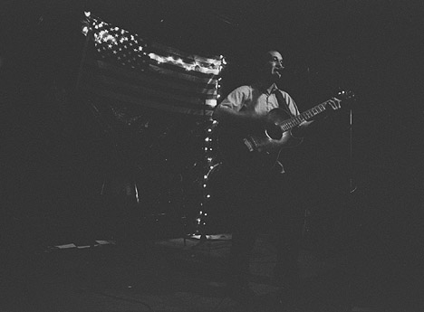
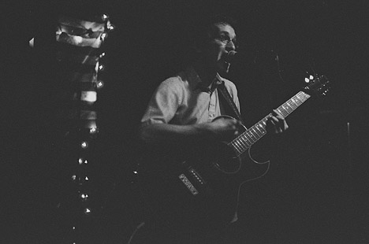

Big Orange Crayonmusical thingsMark Houlihan, Ben Kerris, and, um, some other guy Valentine's Downstairs September 30, 2001 It's been a long time since this one, too. I did an oopsie and underdeveloped the film about two stops, so a lot of them came out too dark. Live and learn... Anyway: The first guy: Not only did I forget his name, but he had to wait for the Go-Gos and Prince songs that Teresa and I put on the jukebox before he started. And his pictures were the darkest. I liked him though. I just wasn't very nice to him (unintentionally!) =)  Mark Houlihan:      Ben Kerris:    Camera stuff: Body: Nikon FM2n Lenses: 24mm f2.8, 50mm f1.4, and 105mm f2.5 Nikkors Film: Kodak Tri-X pushed to about 1600 in Rodinal 1+100, although I meant to go to 6400... Please don't use these elsewhere unless you're in one of them or are a nice person. |